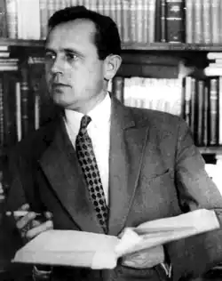

ІВАН МИКИТЕНКО
(1897 — 1937)
Народився Іван Кіндратович Микитенко 6 вересня 1897р. в родині селянина-середняка, що проживала у містечку Рівному Херсонської губернії (нині Кіровоградська область). Тут учився в двокласній міністерській школі, по закінченні якої в 1911p. вступив до Херсонського військово-фельдшерського училища. У грудні 1914p. сімнадцятилітнього "лікарського помічника" Микитенка відправляють на фронт. Він брав участь у діяльності революційного полкового комітету, обраний його членом в дні Лютневої революції, — це згодом знайшло художнє відображення в його останній п'єсі "Як сходило сонце". Через три роки тяжко хворий, з обмороженими ногами, повернувся з фронту. Одужавши, бере активну участь у боротьбі з тифом в селах Єлисаветградщини, завідує лікпунктом у с. Нечаївці, а також пише вірші і короткі п'єси на злободенні теми. 1922p. Нечаївський комітет незаможників направляє І. Микитенка на навчання до Одеського медичного інституту. В Одесі він стає членом літературного об'єднання "Потоки Октября". Незабаром у місцевих газетах з'являються перші його публікації (вірші, фейлетони, нариси, оповідання і статті), випробовує себе і в прозі, насамперед у жанрі "малих форм" — новелах, оповіданнях: "Гордій" (1923), "Більшовики" (1923), "У вершині" (1923), "Нуник" (1923). В ці ж роки надруковані оповідання (цикл "Етюди червоні"), що увійшли до першої прозової збірки "На сонячних гонах" (1926), та п'єса "У боротьбі" (1926). Не залишаючи навчання, І. Микитенко працює на посаді завлітчастиною Одеської укрдерждрами, а згодом керує письменницькою філією "Гарту". Наприкінці 1926р. був викликаний до Харкова, де 1927р. закінчує Харківський медінститут і бере активну участь у підготовці Всеукраїнського з'їзду пролетарських письменників. Згодом стає одним з керівників ВУСППу. У 1926 — 1928 pp. з'являються п'єса "Іду", поема "Вогні", повісті "Антонів огонь", "Брати", "Гавриїл Кириченко — школяр" (пізніша назва — "Дитинство Гавриїла Кириченка"), "Вуркагани". Невелика повість "Брати" (1927) була помітним явищем у прозі 20-х років, неодноразово перевидавалася й перекладалася. "Гавриїл Кириченко — школяр" — перший значний автобіографічний твір І. Микитенка. Прозова збірка "Вуркагани" (1928) містила ряд творів, — "Антонів огонь", "Над морем", "Homo sum" ("Людина") та ін., — а також повісті про дітей. Під враженням поїздок до Німеччини, Польщі, Чехословаччини Микитенко пише книжку дорожніх нарисів і нотаток "Голуби миру" (1929р., в російському перекладі — 1930р.). 1933р. з’являється перша книга роману "Ранок", присвячена темі перевиховання "важких" підлітків, недавніх безпритульних. "Ранок" — найбільший прозовий твір, роман, задуманий як значне епічне полотно, не був завершений письменником (написана тільки перша книга). Одночасно з прозовими творами з'являються п'єси: "Диктатура" (1929), "Світіть нам, зорі" (1930; друга назва "Кадри"), "Справа честі" (1931), "Дівчата нашої країни" (1933), соціальна драма "Бастілія божої матері" (1933), побудована на матеріалі першого розділу роману "Ранок". З появою п'єси "Диктатура" прийшов перший серйозний успіх. Популярністю користувались і більшість наступних п'єс, поставлених не тільки на Україні, а й у багатьох містах: Москві, Ленінграді, Воронежі, Новосибірську, Мінську, Баку, Казані, Ташкенті та ін. В ці ж роки І. Микитенко активно працює як один з керівників ВУСППу, а в 1932р. стає членом оргкомітету Спілки письменників СРСР. Останні роки життя виступає переважно в галузі драматургії: пише комедії "Соло на флейті" (1933 — 1936) і "Дні юності" (1935 — 1936); історичну п'єсу "Маруся Шурай" (1934), яка є неопублікованою (але поставленою в кількох театрах) переробкою драми М. Старицького "Ой не ходи, Грицю, та й на вечорниці", героїчну драму "Як сходило сонце" (1937; надрукована 1962р.). Збирав матеріали для наступних п'єс — про К. Маркса і Ф. Енгельса ("Безсмертні"), про видатного вченого Філатова ("Сліпі й зрячі"), однак не встиг їх написати. Певну цінність являють спогади ("Про себе", "В хвилини спогадів" та ін.), які містять чимало автобіографічних свідчень, оцінок письменником власних творів, його літературні погляди. Загинув І. К. Микитенко 1937р., ставши жертвою сталінського беззаконня. В історію української літератури І. Микитенко входить передусім своїми кращими п'єсами — драмами й комедіями (чим не закреслюється й значення помітніших його оповідань і повістей). Публіцистично загострена, дотепна й колоритна (а в останніх зразках — і більш зосереджена на реалістичному характерописанні) драматургія І. Микитенка була присвячена злободенним проблемам, відображала напругу соціальних змін у суспільстві і тому змогла донести до нашого часу гарячий подих своєї доби.